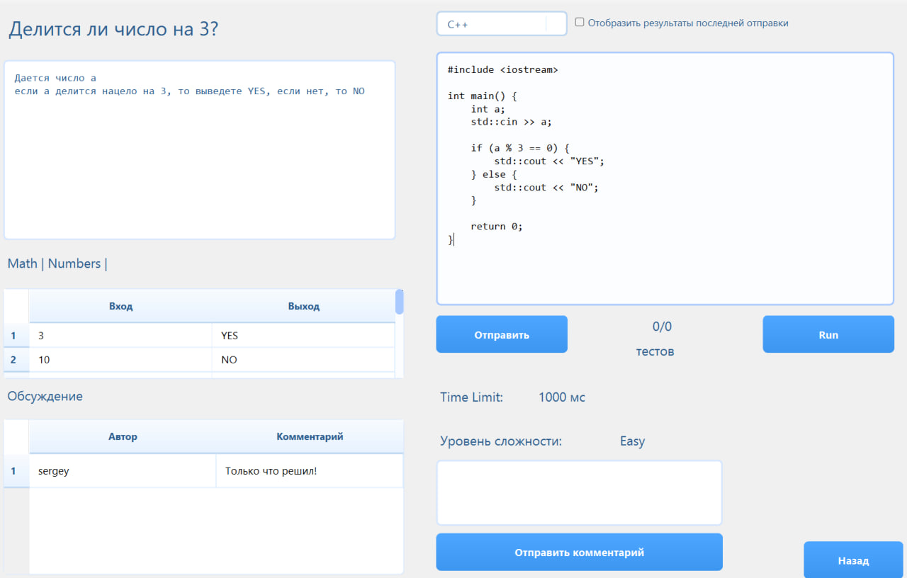
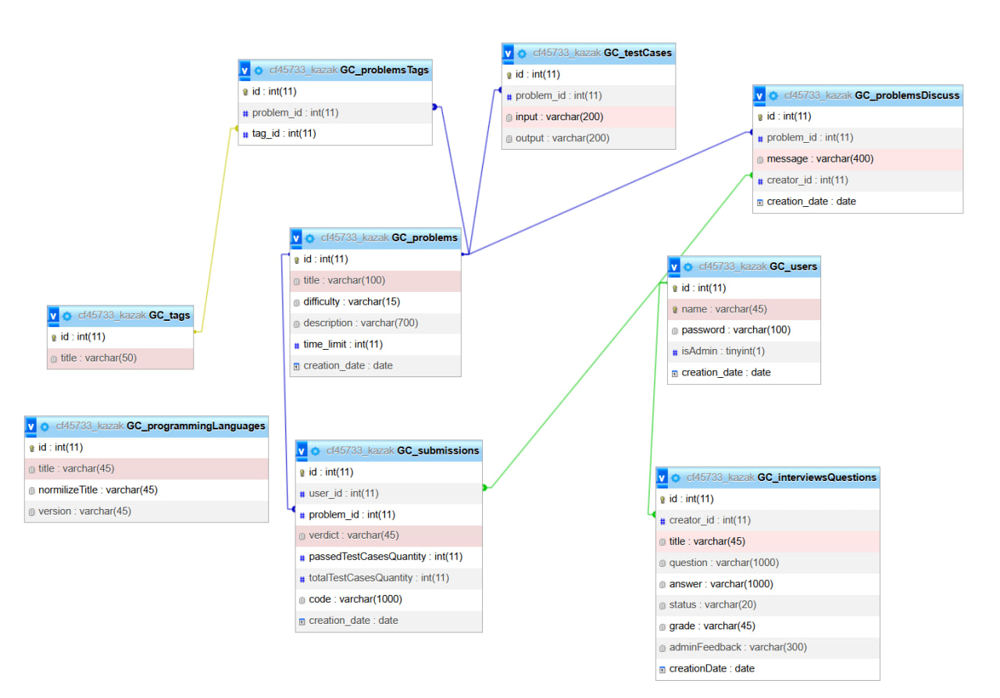

Казаков Сергей Максимович
Москва
C++ Developer
Образование: высшее
Я - начинающий C++ разработчик
Неплохо ориентируюсь в языке и фреймворке Qt. Каждый день повышаю свои навыки
и учусь новому, постоянно практикуюсь, создавая свои собственные проекты.
В своих проектах я активно применяю SQL, интегрирую сторонние библиотеки, API, разрабатываю базы данных.
Работал с MySQL и SQLite в своих проектах.
Очень хочу развиваться профессионально и готов к трудностям
С моим кодом и проектами, которые я делал можно ознакомиться по ссылке на мой Github выше.
Очень хочу развиваться профессионально и готов к трудностям.
Мои контакты
@LubluSnickers (tg) | +79858850963 | sergeykaz.work@gmail.com | GithubНавыки
- C++
- Qt Framework
- SQL (MySQL, SQLite)
- STL
- GUI
- Parsing
- git
- MS Excel
- HTML
- CSS
Проекты
Qt Проекты
- GoCode. Приложение для подготовки к ИТ-собеседованиям.
- Валидация пользователей
- Поддержка 11 языков программирования
- Фильтрация задач при поиске по их названию, тегам, и сложности
- Ведение статистики пользователя: посещаемость в виде графика, процент правильных решений, история решений с кодом
- Возможность комментировать каждую задачу
- Создание вопросов, которые пользователю попадались на собеседованиях с подробным описанием и верным ответом
- После создания вопроса, он не сразу появляется для всех пользователей в общем списке, сначала он отправляется на модерацию к администрации, о вердикте пользователь может узнать в "Профиль"
- В случае отклонения, если пользователь захочет попробовать еще раз выложить свой вопрос на платформу с исправленными недочетами, он, вместо создания нового вопроса и переписывания может воспользоваться функцией "Использовать как шаблон", благодаря чему, ему сразу скопируется вся старая информация о вопросе, где он сможет внести правки, что сильно экономит время
- Фильтрация вопросов по их грейду и названию
- Создание задач, при добавлении тестовых случаев для каждой задачи необходимо вставить таблицу Excel, соответствующую определенным требованиям, указанные в самом приложении
- Модерация вопросов с собеседований пользователей с возможностью приложить сообщение (например, в случае отказа, пояснить, что надо изменить)
- Изменение уже существующих задач

Диаграмма базы данных

Функционал
Функционал админ-панели
Стек
C++ | Qt Framework 6.5.1 | MySQL | Piston API | QXlsx (Library) | STL | CSS(QSS)
Функционал админ-панели
Стек
C++ | Qt Framework 6.5.1 | MySQL | Piston API | QXlsx (Library) | STL | CSS(QSS)
Стек
C++ | Qt Framework 6.5.1 | MySQL | Piston API | QXlsx (Library) | STL | CSS(QSS)
Консольные приложения
Образование (2024 - 2028)
Московский государственный университет геодезии и картографии (МИИГАиК)
Уровень: высшее
Факультет геоинформатики и информационной безопасности
Направление: Информационные системы и технологии
Пройденные курсы:
Московский физико-технический институт - Программирование на C++ (144 часа)